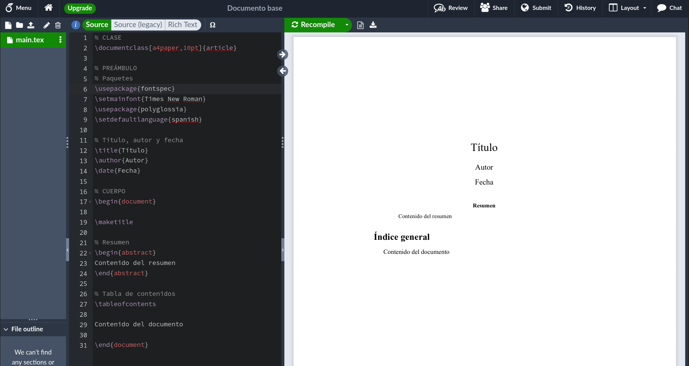

Estructura de un documento
Esqueleto básico
El esqueleto básico del código fuente de un documento en español para compilar con latex o pdflatex es el siguiente.
% CLASE
\documentclass[a4paper,10pt]{article}
% PREÁMBULO
% Paquetes
\usepackage[utf8]{inputenc}
\usepackage[spanish]{babel}
\usepackage[T1]{fontenc}
% Título, autor y fecha
\title{Título}
\author{Autor}
\date{Fecha}
% CUERPO
\begin{document}
\maketitle
% Resumen
\begin{abstract}
Resumen
\end{abstract}
% Tabla de contenidos
\tableofcontents
Contenido del documento
\end{document}Antes de explicar las distintas partes del esqueleto conviene mencionar varias cosas sobre la sintaxis de algunos elementos básicos:
Comandos: Los comandos comienzan siempre por la barra invertida (backslash)
\. En muchas ocasiones van acompañados de argumentos obligatorios que se escriben entre llaves{...}y opcionales que se escriben entre corchetes[...].Entornos: Los entornos, a diferencia de los comandos, son bloques de código sobre los que se aplica alguna acción, y están delimitados siempre por un comando de apertura
\begin{entorno}y otro de cierre\end{entorno}.Comentarios: Al igual que en otros lenguajes del programación se pueden hacer comentarios en el código fuente que no serán interpretados por el compilador. Para ello se utiliza el símbolo de porcentaje
%al comienzo del comentario.Símbolos reservados: Existe una serie de símbolos que están reservados para funciones especiales.
\: Indica el inicio de un comando.$: Declara el entorno matemático.{ }: Inicia y finaliza un grupo.#: Indica el número de un argumento en la definición de comandos.%: Indica el inicio de un comentarios.&: Separa elementos en una tabla o fórmula.^: Escribe un superíndice._, Escribe un subíndice.~, Indica por dónde se puede partir una palabra al final de una línea.
Para que aparezcan estos caracteres en el documento final es necesario escribirlos en el código fuente precedidos por la barra invertida (\$, \{, \}, \#, \%, \&, \^, \_, \~) excepto la barra invertida que se escribe con el comando \backslash.
A continuación se explican las partes del esqueleto anterior:
Clase: La primera línea de un fichero con código \(\LaTeX\) indica la clase de documento que se va a generar mediante el comando
\documentclass. En el ejemplo aparece un argumento obligatorio que indica el tipo de documento que se desea crear, artículo (article), pero se pueden crear otros tipos de documentos como informes (report), libros (book) o cartas (letter). . Y también aparecen dos argumentos opcionales,a4paperque indica el tamaño de la hoja en el documento final (a4), y10ptque indica el tamaño base de la fuente utilizada en el documento (existe también11pty12pt).Preámbulo: El preámbulo es la parte que va después de la clase y antes del comienzo del cuerpo del documento. En parte suele utilizarse para la carga de los paquetes de macros que se van a utilizar en el documento y la configuración del documento. En el ejemplo el preámbulo comienza con la carga de tres paquetes mediante el comando
\usepackage: el paqueteinputencque permite definir la codificación de los caracteres del código fuente (conviene utilizar la codificaciónutf8sobre todo si se van a utilizar caracteres no ASCII); el paquetebabelque permite definir el idioma del documento (spanish); y el paquetefontencque especifique las codificaciones1 de las fuentes (T1).A continuación se suelen configurar algunos aspectos del documento como podrían ser los márgenes, encabezados y pies, el título, autor y fecha, y otras muchas posibilidades.
En el preámbulo también se pueden definir nuevos comandos \(\LaTeX\) o redefinir los ya existentes.
Cuerpo. Contiene el texto del cuerpo del documento y tiene que ir dentro del entorno
\begin{document}y\end{document}. Suele empezar con el comando\maketitlesi se desea empezar el documento con el título, autor y fecha que se han definido previamente en el preámbulo, y le sigue el comando\tableofcontentsque introduce la tabla de contenidos en el documento.
Si se va a utilizar el compilador xelatex los paquetes del preámbulo cambian y deberían utilizarse los siguientes:
% Paquetes
\usepackage{fontspec}
\setmainfont{Times New Roman}
\usepackage{polyglossia}
\setdefaultlanguage{spanish}El paquete fontspec permite definir las fuentes tipográfica que se desean utilizar en el documento final (por ejemplo Times New Roman), que debe estar instalada en el sistema donde se compile el documento, y el paquete polyglossia permite definir el idioma del documento.
En la Figura 1 se puede apreciar el documento final que se obtiene tras compilar el código anterior con xelatex en Overleaf.

Secciones
Normalmente un documento extenso se dividirá en secciones y subsecciones (o incluso capítulos si se trata de un libro). Para definir las secciones de un documento se utilizan los siguientes comandos:
\chapter{Título del capítulo}. Crea un nuevo capítulo con el título indicado y lo numera. Solo puede usarse cuando la clase del documento esbook.\section{Título de la sección}. Crea una nueva sección con el título indicado y la numera.\subsection{Título de la subsección}. Crea una nueva subsección con el título indicado y la numera.\subsubsection{Título de la subsubsección}. Crea una nueva subsubsección con el título indicado y la numera.
Las secciones definidas con estos documentos aparecerán en la tabla de contenidos automáticamente.
Existen versiones alternativas de estos comandos añadiendo un asterisco (\chapter*, \section*, \subsection*, \subsubsection*) que crean encabezados de sección sin numerar y que tampoco aparecerán en la tabla de contenidos.
Ejemplo
\documentclass[a4paper, 10pt]{article}
...
% CUERPO
\begin{document}
\tableofcontents
\section{Sección primera}
Texto de la sección.
\subsection{Subsección primera}
Texto de la subsección.
% Encabezado de subsección sin numerar
\subseccion*{Subsección segunda}
Texto de la subsección.
\subsection{Subsección tercera}
Texto de la subsección.
\section{Sección segunda}
Texto de la sección.
\end{document}
Párrafos y cambios de línea
Para crear un párrafo nuevo basta dejar una o más líneas en blanco.
Si se quiere hacer un cambio de línea dentro de un mismo párrafo, se utiliza el comando \newline o \\.
Ejemplo
% CUERPO
\begin{document}
Este es el primer párrafo del documento, con un \\
cambio de linea.
Este es el segundo párrafo del documento. Obsérvese que cada vez que se comienza un párrafo la primera línea de desplaza un poco hacia la derecha. Esto se conoce como \emph{sangría}.
\end{document}
Justificación
Los párrafos se justifican por defecto a la izquierda y a la derecha. \(\LaTeX\) utiliza un algoritmo que permite partir las palabras al final de una línea para obtener párrafos con un buen aspecto estético (sin grandes espacios en blanco entre palabras). Pero también se pueden justificar solo a la izquierda, solo a la derecha o centrados entre los márgenes. Para ello se utilizan los siguientes entornos:
flushleft: Justifica el texto a la izquierda.flushright: Justifica el texto a la derecha.center: Justifica el texto centrado entre los márgenes.
% CUERPO
\begin{document}
Este es el primer párrafo del documento, y aparece justificado a ambos lados (márgenes izquierdo y derecho) por defecto. Para que las líneas tengan la misma longitud, se utiliza un algoritmo que permite partir las palabras al final de una línea.
\begin{flushleft}
Este es el segundo párrafo del documento y aparece justificado a la izquierda, es decir alineado con el margen izquierdo del documento. Obsérvese que no todas las líneas acaban a la misma altura.
\end{flushleft}
\begin{flushright}
Este es el tercer párrafo del documento y aparece justificado a la derecha, es decir alineado con el margen derecho del documento. Obsérvese que no todas las líneas empiezan a la misma altura.
\end{flushright}
\begin{center}
Este es el último párrafo del documento y aparece justificado en el centro entre los márgenes del documento. Obsérvese que ahora las líneas no empiezan ni terminan a la misma altura.
\end{center}
\end{document}Negrita, cursiva y subrayado
Para resaltar un texto habitualmente se utiliza negrita, cursiva o subrayado. Estos formatos se aplican con los siguientes comandos:
\textbf{...}: Pone el texto en negrita.\textit{...}: Pone el texto en cursiva o itálica.emph{...}: Enfatiza el texto cambiando de estilo (si estamos en un entorno de cursiva pasa a normal y si estamos en un entorno de texto normal pasa a cursiva).\underline{...}: Subraya el texto.
Ejemplo
% CUERPO
\begin{document}
Este texto está en \textbf{negrita}, este en \textit{cursiva} y este \underline{subrayado}.
\textit{Este texto está \emph{enfatizado}}.
\end{document}
Notas
Una codificación de fuente es un mapeo de los códigos de caracteres a los glifos de la fuente que se utilizan para componer su salida.↩︎